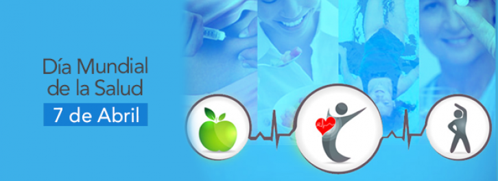

1.-Cuando se celebra y por que?
Se celebra: 7 de abril
Cada año el Día Mundial de la Salud para conmemorar la creación de la Organización Mundial de la Salud.
Entre las actividades que realiza la OMS se encuentran tales como: armonización y codificación de enfermedades y medicamentos, medidas sanitarias de prevención y emergencia, asistencia a los países menos avanzados y porgramas específicos para la lucha contra enfermedades.

Aplicación 3 Dia Mundial de la Salud OMS
Guadalupe Juarez Xelhua
2.-Que se trata de conseguir con la campaña?
Sus principios son:
La salud es un estado de completo bienestar físico, mental y social, y no solamente la ausencia de afecciones o enfermedades.
El goce del grado máximo de salud que se pueda lograr es uno de los derechos fundamentales de todo ser humano sin distinción de raza, religión, ideología política o condición económica o social.
La salud de todos los pueblos es una condición fundamental para lograr la paz y la seguridad y depende de la más amplia cooperación de las personas y de los Estados.
Los resultados alcanzados por cada Estado en el fomento y protección de la salud son valiosos para todos
Aplicación 3 Dia Mundial de la Salud OMS
Guadalupe Juarez Xelhua
3.-Que hace la OMS?
La OMS se encarga de la gestión de políticas sanitarias a escala global. Fue creada por iniciativa del Consejo Económico y Social de la ONU y se reunió por primera vez en 1948.
La OMS se rige por la Asamblea Mundial de la Salud, formada por representantes de los ciento noventa y tres países miembros de la organización. Esta asamblea se reúne todos los meses de mayo
Aplicación 3 Dia Mundial de la Salud OMS
Guadalupe Juarez Xelhua
4.-Cobertura Sanitaria Universal
El Día Internacional de la Cobertura Sanitaria Universal (CSU) tiene por objetivo crear conciencia sobre la necesidad de contar con una cobertura sanitaria universal y sistemas de salud sólidos y resilientes, contando para ello con la colaboración de múltiples asociados.
El 12 de diciembre de cada año, los defensores de la CSU hablan de las historias de los millones de personas que siguen sin tener atención sanitaria y de los logros alcanzados, piden a los dirigentes que hagan mayores y mejores inversiones en el ámbito de la salud y alientan a diversos grupos a que se comprometan a ayudar a que el mundo se acerque más a la CSU de aquí a 2030
Aplicación 3 Dia Mundial de la Salud OMS
Guadalupe Juarez Xelhua
5.-Que es lo que no incluye la cobertura sanitaria universal?
La CSU no implica la cobertura gratuita de todas las intervenciones sanitarias posibles, independientemente de su costo, ya que ningún país puede permitirse ofrecer todos los servicios gratuitamente de forma sostenible.
La CSU no se refiere únicamente a la financiación de la salud: abarca todos los componentes del sistema de salud, a saber, los sistemas de prestación de servicios de salud, el personal sanitario, las instalaciones sanitarias o las redes de comunicación, las tecnologías sanitarias, los sistemas de información, los mecanismos de garantía de la calidad, la gobernanza y la legislación.
La CSU no solo tiene por finalidad asegurar un conjunto de servicios de salud mínimos, sino también lograr la ampliación progresiva de la cobertura de los servicios de salud y de la protección financiera, conforme se disponga de más recursos.
La CSU no solo engloba los servicios de tratamiento específicos, sino también incluye los servicios a la población como las campañas de salud pública, la adición de flúor al agua, el control de los lugares de reproducción de los mosquitos, entre otros.
La CSU comprende mucho más que solo la salud. Adoptar medidas para alcanzar la cobertura sanitaria universal equivale a adoptar medidas para lograr la equidad, las prioridades en materia de desarrollo y la inclusión y cohesión sociales.
Aplicación 3 Dia Mundial de la Salud OMS
Guadalupe Juarez Xelhua
.jpg)


 1
1 2
2 3
3 4
4 5
5